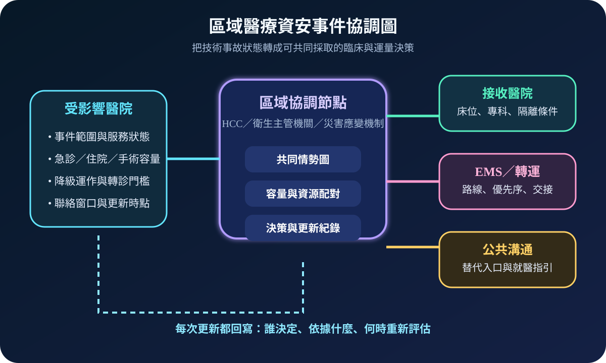
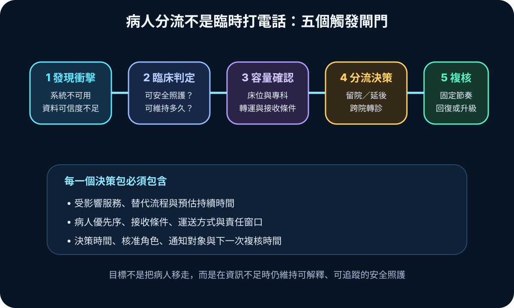
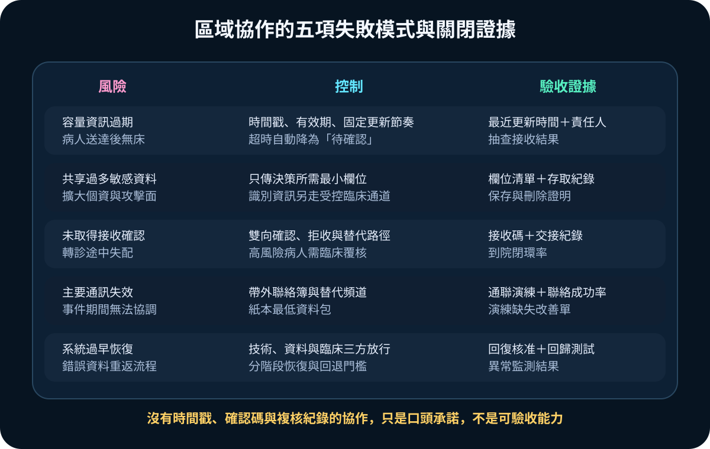

醫療資安國際觀察 · 2026-10-11
資安事件下如何跨院協調病人分流：從容量觸發到接收證據
作者：Dr. William｜醫療資訊與資安治理實務工作者
醫院遭遇資安事件時，技術隔離只是第一步；若掛號、影像、檢驗或電子病歷持續不可用，還必須把服務狀態轉成跨院可理解的容量、轉診與接收決策。
名詞解釋：後果管理與區域協調
後果管理處理事件對照護、運量、供應與公共溝通造成的影響；區域醫療協調則由醫院、急救、公共衛生、災害應變與接收機構共享必要資訊、配對資源並追蹤決策。兩者不取代院內事件指揮，而是補上單一機構無法獨立處理的病人流與資源依賴。
國際現況與適用邊界
美國 HHS ASPR TRACIE 於 2026 年 10 月 9 日更新醫療資安主題資源，將資安事件應變與後果管理並列，並指出攻擊會影響病人照護與營運持續。HHS 的醫療聯盟能力指引則把資訊共享、資源協調、照護持續、撤離轉移與醫療量能列為區域準備事項。NIST SP 800-61 Rev. 3 於 2025 年 4 月發布，要求把事件應變整合進整體風險管理、準備、回應與復原活動。
台灣適用原則：上述文件屬美國指引，不構成台灣醫院的直接法定義務。台灣醫療機構可借鏡其協調結構，但啟動權限、個資欄位、通報對象、轉診責任與醫療決策仍須依國內法令、主管機關要求及既有災害醫療體系設定。
規劃：先定義共同資料包
計畫至少要明確定義事件窗口、臨床窗口、區域窗口及備援聯絡方式；共同資料包只包含決策所需欄位，例如受影響服務、預估持續時間、可安全維持的照護範圍、床位與專科容量、轉運限制、接收條件及下一次更新時間。驗收指標可採容量資訊有效率、接收確認時間、到院閉環率、帶外通聯成功率與決策紀錄完整率。
實作：五個觸發閘門
- 發現衝擊：確認系統不可用、資料不可信或人工作業已接近上限。
- 臨床判定：由臨床與營運角色評估哪些服務可降級、延後或必須轉出。
- 容量確認：透過區域節點確認接收院所、專科、床位、隔離及轉運條件。
- 分流決策：完成雙向接收確認、病人交接與責任紀錄後才啟動轉診。
- 持續複核：按固定節奏更新服務與容量，達到三方放行條件後分階段恢復。

風險：協作資訊也可能失真或外洩
常見失敗包括容量資訊過期、敏感資料共享過度、尚未確認接收即啟運、主要通訊同時失效，以及技術服務恢復後未驗證資料完整性便重啟臨床流程。控制重點是欄位最小化、有效期、雙向確認、帶外通訊、分階段恢復與完整決策紀錄。

可執行清單
- 是否有院內與區域兩層事件窗口及帶外聯絡方式？
- 共同資料包是否限制為病人分流決策所需最小欄位？
- 容量資訊是否有時間戳、有效期與逾時處理規則？
- 高風險轉診是否完成接收院所與臨床人員雙向確認？
- 主要通訊失效時是否仍能以替代頻道完成交接？
- 恢復服務前是否同時驗證技術、資料與臨床安全？
來源
- HHS ASPR TRACIE｜Cybersecurity Topic Collection（更新：2026-10-09；查閱：2026-10-11）
- HHS ASPR｜Health Care Preparedness and Response Capabilities for Health Care Coalitions（現行名稱確認：2024-05；檔案更新：2026-02-11；查閱：2026-10-11）
- NIST｜SP 800-61 Rev. 3: Incident Response Recommendations and Considerations for Cybersecurity Risk Management（發布：2025-04-03；查閱：2026-10-11）
內容說明
本文依健康台灣深耕計畫相關治理內容整理，並參考 HHS 與 NIST 公開資料，提出資安事件下跨院協調與病人分流的治理框架；不把外國指引視為台灣法定義務，也不取代主管機關公告、院內緊急應變計畫、臨床判斷或法律意見。